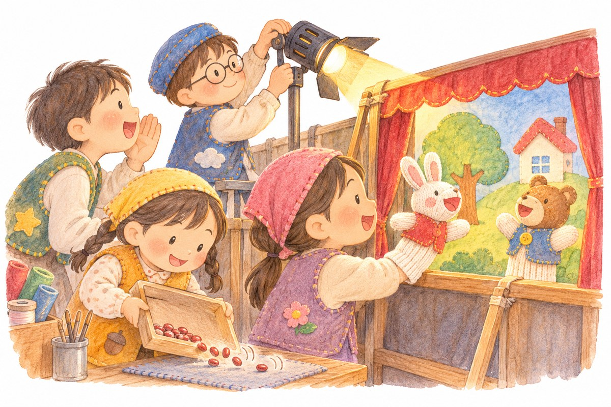

観客の声で、
舞台が変わる
人形劇は、仲間と作り、観客と一緒に完成する芸術です。一人ひとりの得意を持ち寄り、本番では呼吸を合わせます。そして客席の反応で、舞台がその場で変わっていきます。


案内役から、ひとこと本番中、客席の子どもたちの声に思わず笑ってしまうことがあります。それも含めて「今日だけの舞台」なんです。
8人で作る、ひとつの舞台
Aさん・物語を考える
脚本
Bさん・絵を描く
人形・背景のデザイン
Cさん・裁縫
人形の体と衣装
Dさん・日曜大工
舞台装置・操作棒
Eさん・音楽
音楽・効果音
Fさん・面白い話し方
声の演技・ナレーション
Gさん・人形を動かす
主役の操作
Hさん・全体をまとめる
演出・日程管理・公演先との調整
みんなが芸術の専門家でなくても、力を持ち寄れば一つの作品になります。絵が苦手でも裁縫なら、話すのが苦手でも工作なら、活躍できます。
大阪府の「高槻島本人形連絡会」は、絵本や昔話を図書館で調べ、先輩の助言も受けて脚本にします。仲間と意見をぶつけ合い、互いを認め合う過程がとても楽しい、と語っています。勝ち負けを競うのではなく、全員で作品を作り、観客に喜んでもらう。それが共通の目標です。
本番は、呼吸を合わせる時間
ウサギがオオカミに出会って驚く場面では、次の五つが同時に起こります。
- ウサギを操る人が体を震わせる
- オオカミを操る人がゆっくり近づく
- 台詞担当が驚いた声を出す
- 音響担当が緊張感のある音を流す
- 照明担当が舞台を暗くする
文楽の三人遣いは、この「呼吸を合わせる」ことの極みです。アマチュアでも、大きな人形を二人で操る、声と動きを別の人が担うといった形で、同じような一体感を味わえます。本番が成功したときの達成感を、全員で分かち合えます。
観客も、舞台の一員
映画や録画された映像は、観客がどう反応しても内容は変わりません。生の人形劇は違います。
人形：「あれ？ オオカミさんはどこに行ったのかな？」
子どもたち：「後ろ！ 後ろにいるよ！」
人形（予定にない返し）：「えっ？ 後ろ？ ぼくのしっぽのこと？」
客席全体が笑いに包まれ、演技がさらに変わっていく…
子どもが怖がりすぎたら演出をやわらげ、笑いが起きたら間を長くする。同じ作品でも、二度とまったく同じ舞台にはなりません。
ジャズのライブに似ています
ジャズは、基本の曲があっても、演奏者同士の呼吸や客席の雰囲気で演奏が変わります。人形劇もよく似ています。
| ジャズのライブ | 人形劇の生公演 |
|---|---|
| 楽譜・基本の曲 | 脚本・基本の物語 |
| 楽器 | 人形・声・舞台装置 |
| 演奏者同士のセッション | 劇団員同士の連携 |
| アドリブ演奏 | 即興の台詞や動作 |
| 観客の拍手や歓声 | 子どもたちの笑いや呼びかけ |
| その日だけの演奏 | その日だけの舞台 |
ジャズの即興には相応の演奏技術がいりますが、人形劇なら、ふだんの話し言葉という身近な技術から、双方向の表現に挑戦できます。
舞台を作る時間は、人と人をつなぐ時間でもあります。親子や地域とのつながりを見てみましょう。
家族と地域のページへ →